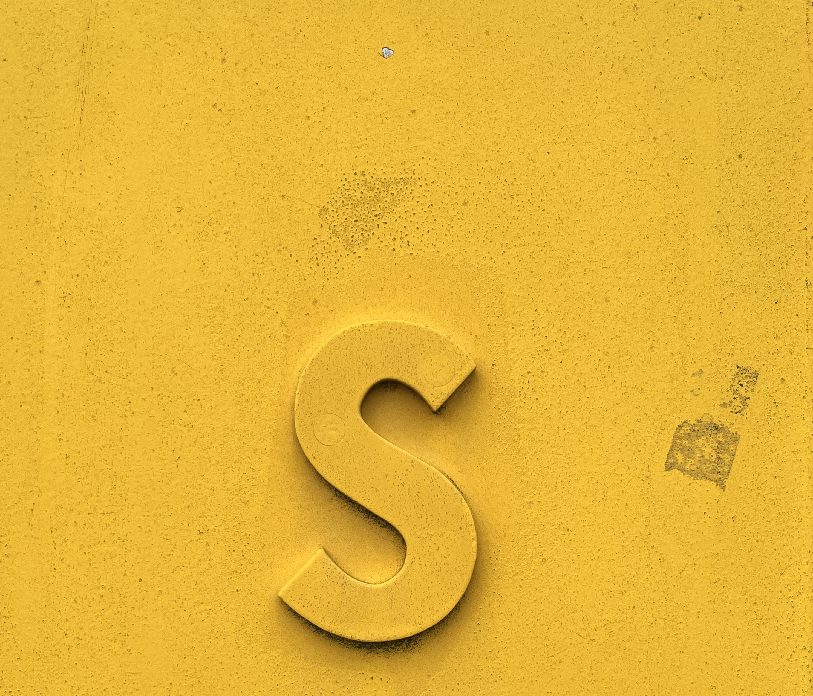
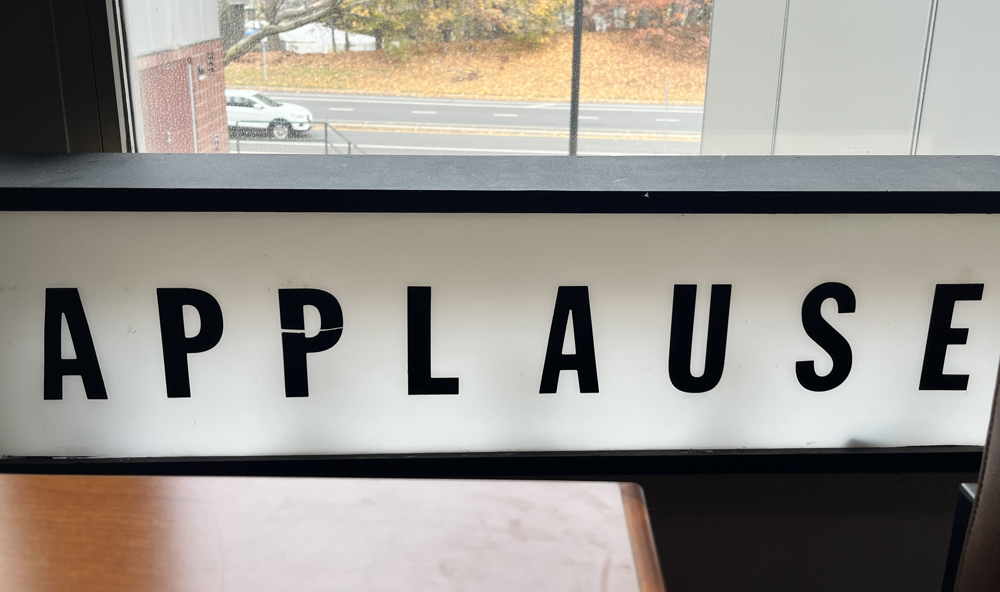
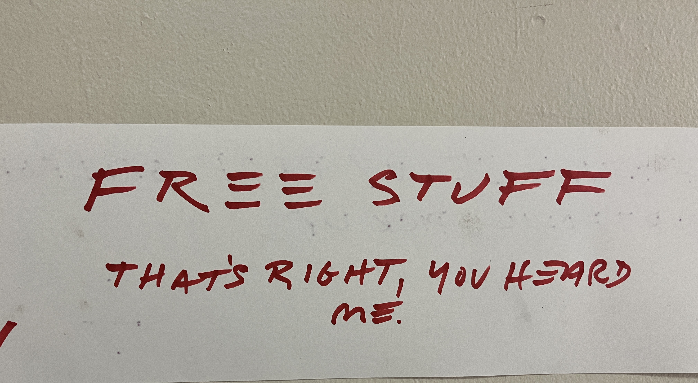

I took these eight images at James J Maloney Hall.
I found various examples of wall typography, wayfinding, and publication/print design typography.
It was interesting to stop and actually look for the various types of typography on campus that I pass by everyday.
Various styles from thick typography to thin typography, and serif to sans-serif.
I looked outside of the building, the living room space, and the hallways leading to my classroom to find various unique styles.

The letter "S" in a bold sans-serif typeface found on Sheng Sundial outside of the building.

Applause sign in a sans-serif typeface found inside the building's living room.
Typography on a wall art found inside the building.
Bolded sans-serif typography on a poster found inside the building.
Bolded sans-serif art deco style typeface on a sign found inside the building.
Light/regular sans-serif typeface on wayfinding signage found next to a room.

Sans-serif typeface found on sign inside the building.
Serif typeface found on wayfinding signage inside the building.